Summary
This project was a BSc project at Linköping University. The group consisted of 6 people and the purpose was to investigate the optimal design of a multiplayer game in a dome theater where each player steers its character through their mobile device. My work in this project was focused on interface design, 3D modelling and coding of graphics such as performing the equirectangular mapping in order to display the 2D background image correctly when displayed on a dome screen.
The project resulted in a multiplayer game for 50 to 100 players where each player connects to the game through a mobile phone device. Each character is a diver whos mission is to gather plastics in an ocean where the environment is designed to best grasp the format of the dome screen. The game was developed using C++ and OpenGL and communication was handled with node.js and websockets. The internal projection in the dome theater was handled by the tool SGCT that was provided by Linköping University. The game was designed as pause entertainment before the actual dome screen showing at Visualiseringscenter C in Norrköping.
This project was additionally performed as a project with focus on software development which meant that some focus of the project was to learn and evaluate the Scrum method. We worked in sprints divided into 2 weeks and we used Github Projects for our agile project board and all project members was responsible for knowing the outline of what was going on in all parts of the project and help with code reviews.
My contributions
During this project I was one of two persons responsible for design and graphics. My main focuses was on the 3D modelling process with everything from sculpting and modelling to texturing, rigging and animation for characters. Additionally I was part of performing a user centered evaluation of how the controls was best designed and I was coding the class for the background object and performed equirectangular mapping in order to display a 2D image in a correct way on the sceen in the dome theater.
Concept Art
The customer of this project wanted a small game that had an environmental theme in some way and after our first brainstorming sessions we concluded that the topic we wanted for the game was to gather plastic from the ocean. In that way we could take advantage of the immersive screen and use that for feeling like you are in the water in the game. Below you can see one of my first concept art drawings for expressing the feeling we wanted for the game and trying out the color palette we chose.
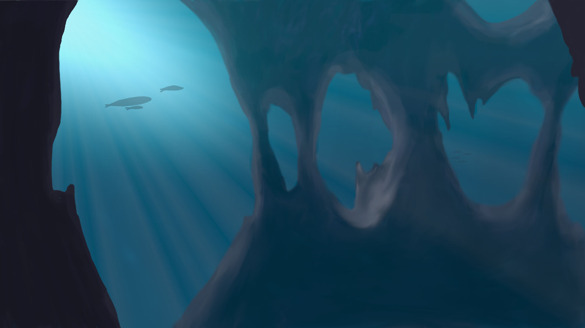Modelling
The group decided on using Blender as modelling software and I was mostly focused on creating the diver character that each player should steer and collect plastic with. I used a combination of the sculpting and modelling tools and the resulting model can be seen below as sculpt, wireframe and with textures. I also created a fish model that was initially thought to be used as an enemy in the game play but due to lack of time, we never got to implement that feature.
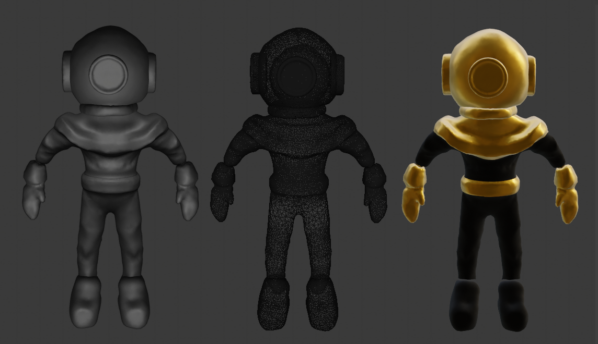I also animated the character with a small animation in order to get a better game experience. Since the dome screen is far from each player, it was not necessary to have a very detailed animation. The animation was created by adding a simple rig and keyframes to the existing model. Snapshots from the animation can be seen below.
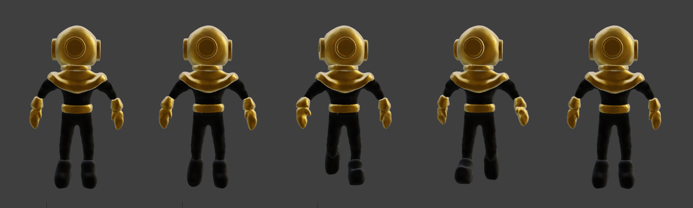Apart from the models I created individually, I also textured all the plastic to be used as collectibles in the game, they can be seen in the image below.
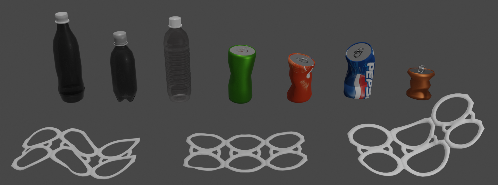Equirectangular Mapping
The dome screen is evolving around the visitors in the dome theater and it should be like watching into a fish-eye lens. The mapping to the dome screen can be done using different methods that all have different advantages and disadvantages. In this project, equirectangular mapping has been used, which is also a well-used method for real-time applications. An equirectangular mapping is a cylindrical equidistant projection that uses the spherical coordinates and maps longitude directly to the horizontal coordinate and latitude to the vertical. This was performed according to the equation below.
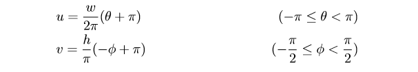This approach resulted in a correct appearance of our background object and our background image can be seen in 2D format below to the left and correctly equirectangular mapped below to the right. The game has been simulated on a regular computer screen using a fish-eye lens through the internal tool SGCT.
User Centered Evaluation
We performed a user evaluation with a combination of quantitative and qualitative questions in order to investigate how we best could design the controls for the game. The two different designs investigated can be seen below.
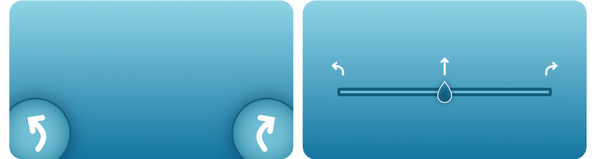The investigation resulted in 63 responses and all evaluated the slider as more clear how they should steer but nearly all also stated that they would choose the buttons because they were more intuitive. More results was investigated but it was decided to continue on using the buttons. An additional approach could have been to use the phone itself and use the gyrator in it and let the player steer by tilting their phone but due to technical issues we had to choose another approach.
Resulting game
The resulting game could be played by 5 to 100 players in the dome theater. The players connect to the game by navigating to the webpage provided. The user interface on the mobile phone can be seen below with a start screen (a), after that the game displays a tutorial that is not shown in the image and the color combination that has been given to the player (b) in order to being able to identify the correct character on screen. Then the game starts and the player steers using two buttons (c) and the game ends when the air is out in oxygen tube. The last screen displays the players ending score after how much plastic they collected (d).
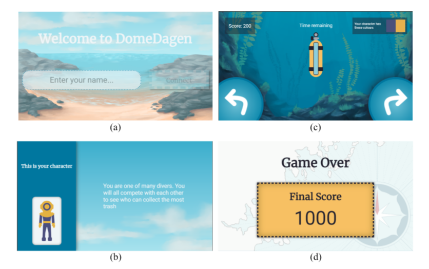The game was implemented using a combination of object oriented and data oriented design. Much focus for the game logic was also on how to make it clear for players which character they were on a screen with 100 others and how the game controls was best designed, since the dome screen itself gives a loss of the normal feeling of up-and-down. The model for the game implementation can be seen below.
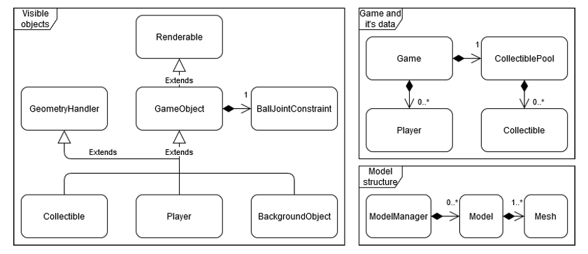The game was successfully implemented, although the time limit made it more like a first alpha test of the game. Due to the fact that the game was developed during the time of Covid-19 quarantine and distance mode at university, we never got the chance to stress test the game unfortunately but it was a fun challenge to design this type of game for something that special lika a dome screen which had us face challenges such as misjudgements regarding how small things on a screen could be really huge on the dome screen. Some additional resulting images can be seen below, both from the dome theater and locally simulated using the fish-eye lens.
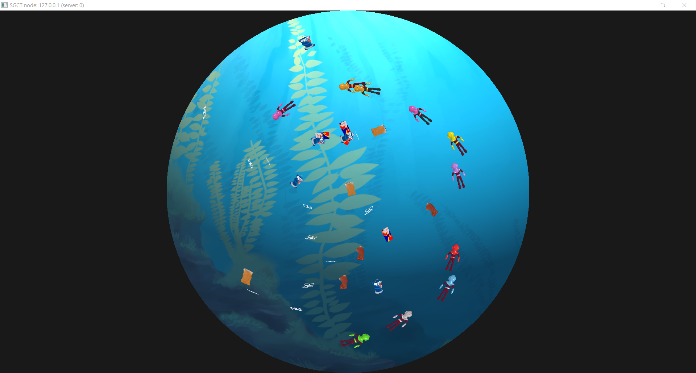 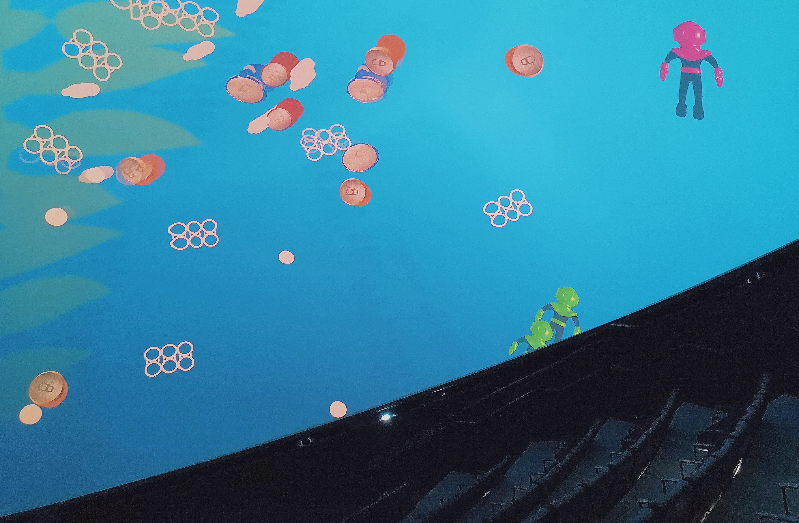 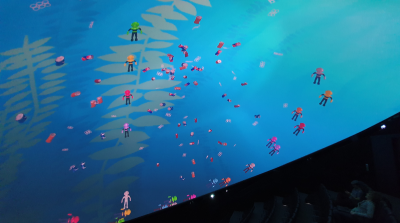